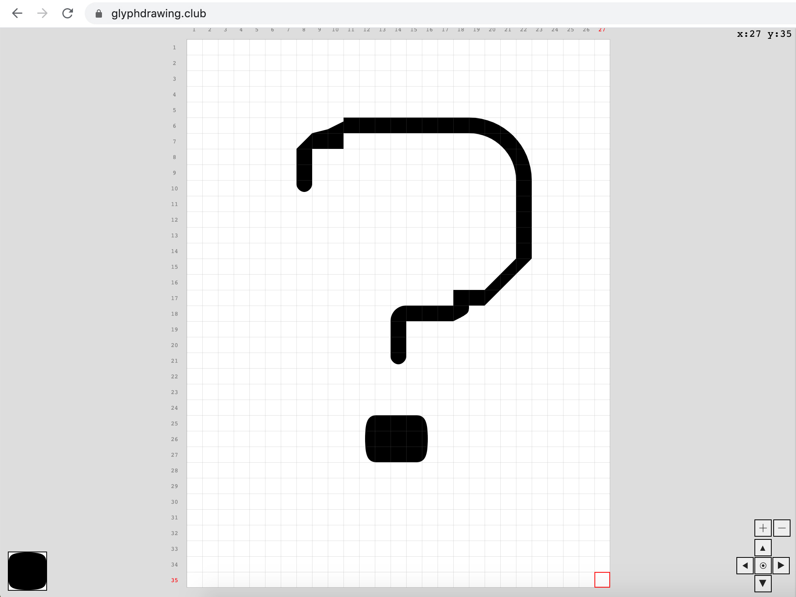

Experiment 6: Thinking about, how?
Date: May 2020
Size: 140 x 180 mm
This poster draws parallels between concepts of brutalist architecture, skateboarding and my inability to clearly communicate the value of design. The quote is from a video clip of pro-skateboarder Rodney Mullen, in which he discusses how he goes about sharing insights from his community to "outsiders" in his public speaking.
A couple of weeks ago I watched a Youtube video called Rodney Mullen: The Beauty of Skateboarding. Rodney talks about communicating tacit knowledge within the skate community to an audience of "outsiders", people in fields such as science, mathematics and technology. He does so in explaining how they individuate themselves and form connections through what they do and the particular spirit of resilience that skaters possess.

Through reading Design Dedication, I was introduced to an open-source, modular design program called glyphdrawing.club, I set out to learn how to use this tool and see what the outcome would say to me. At first they were saying pretty bad things. I thought I'd bring in the concept of type life drawing, so I picked a glyph (Plantin Semibold, question mark) and tried to recreate it. It became increasingly frustrating because the specific curves of that glyph were so difficult to capture with the limitations of the tools, but mostly my lack of type drawing skills, so I changed to a typeface that was more modular in appearance and easier to replicate (Courier New).
As my patience wore through, the edges of the glyph remained rough and blocky, which reminded me of ideas around brutalist architecture and design, where the structure is revealed in an "honest" way, often presenting a harsh appearance but the function behind these buildings were to serve the communities living in them. I thought this was very comparable to the ideas of the beauty within the skate community.
In the past, an ugly outcome would often lead to a dead end and an abandoned project or thought. I embraced the chunky edges of the question mark, the spirit of brutalism and skateboarding to make this poster.
